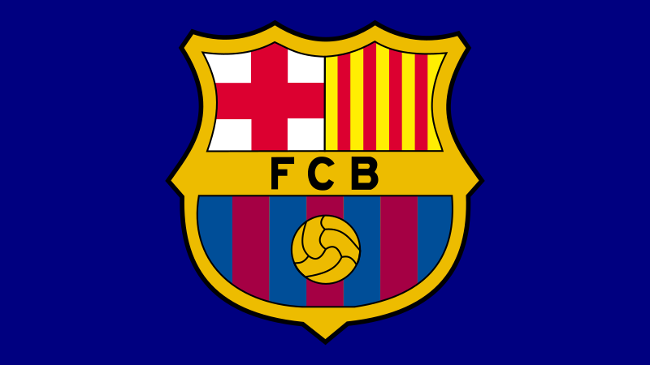

Soccer Ranker
Soccer Ranker
FC Barcelona: Top 10 Best Currently Playing Players
Fans across the world voted to determine which FCB player they thought was the best, and the results display who have the highest rankings!
PUBLISHED FEB 8, 2024

In celebration of FC Barcelona's 125th creation anniversary and their recent La Liga triumph, fans were asked to
send in their votes of who their top players are, and the results were tallied in the FCB top 10 poll from reddit's r/Barca.
With a large variety of players to choose from, it's no surprise that many voters struggled to pick the best. However, some
players have stood out more to fans and enjoyers, whether through their skills or their personality. The team wouldn't be
the same without them.
Raphinha
FCB’s valued Brazilian player. While he is a relatively new player, he has quickly shown his technical qualities and has adapted very well to their playstyle. He is Barcelona's main man with G/As at many times during each season. He posseses high dribbling ability, ball control and precise passing as a typical right winger. And with his high work rate, he is adaptable and can even drop down into semi-defensive positions. A classy Brazilian.
İlkay Gündoğan
FCB’s most experienced player. As the previous captain of the treble & champions league winning Manchester City in 2023, he is a asset that is priceless. Often regarded as a big-game player, he repeatedly shows his class through his variety of passes, throughballs, and goalscoring ability as a central midfielder.
Ferran Torres
FFCB’s most versatile forward. He has phenomenal technical skills that make him a valuable asset in the attacking third. And with his versality, he can play as a center forward, right winger or a left winger and excelles at them all. His ability to adapt to different roles provides tactical flexibility for the team. He is also a prolific goalscorer for FCB, and is often regarded as a clutch player.
Lamine Yamal
FCB’s talented young prodigy. While only being a teenager, his flawless skills at such a young age as a right winger have made him even be compared to Barcelona greats like Lionel Messi. He is a force to be reckoned with with his daring dribbling and passing abilities, and has a higher chance creating ability than most senior players. He is a true Barcelona gem, not only for the present, but for the future.
João Cancelo
FCB's world class fullback. As a fullback, he's versatile, because not only can he play his primary position of right-back, he also can play as a left back, left winger, or a right winger. In all of these positions though, he is known for his speed, offensive capabilities, technical skills, dribbling skills, creativity, and crossing ability. He is a key player for FCB's first team, and has the quality and experience - especially since he was part of Manchester City's treble winning team for half the season in 2023.
Ronald Araujo
FCB's world class center-back. He is a phenomenal defender, who is strong, fast, and great in aerial duels. He tackles well, and can sometimes make long diagonal passes that can be crucial to advancing play. He posseses great pace, and, as FCB's third captain, also possesses great leadership.
Marc-André ter Stegen
FCB’s brick wall in defense. He is a true world class goalkeeper, often regarded as the "GOATkeeper" by FCB fans. He ranks among the top 5 current best goalkeepers currently because of his phenomenal shot stopping, passing ability, reflexes, ball playing ability, and diving saves. His class has broken multiple records, with the most incredible one coming in the recent 2022-2023 season where he conceded only 18 goals in 38 league matches, tying him with the no. 1 record of goals-conceded to games ratio in La Liga history. He is the current 2nd captain of FC Barcelona.
Pedri
FCB’s most creative player. He is quick, and is gifted in technical skills. His passes are near similar to those of FCB legends such as Andres Iniesta and Lionel Messi - and so he is a great asset to the team with. While he is injury prone, it is often said that “a fit Pedri cannot be benched”. His impact on the field is tremendous.
Gavi
FCB’s most active player. He can play multiple positions and has the highest work rate of the entire squad, which is accredited to his youth and his severe passion for the team. While he primarily plays as a central midfielder, people often say that “he is everywhere on the field” because he is always there in most plays, even in defense. Without him on the field, there is a visible change in the playstyle of the FCB team.
Frenkie de Jong
FCB’s best player, by far. De Jong is known for his versatility, being able to play in various midfield roles. His adaptability allows Barcelona to use him in different positions based on the team's needs. He also possesses excellent ball control, passing skills, exceptional vision, and is known for his ability to dictate the tempo of the game and distribute the ball effectively. This is crucial for Barcelona's possession-based style of play. He also has a high work rate that is almost on par with that of Gavi’s.